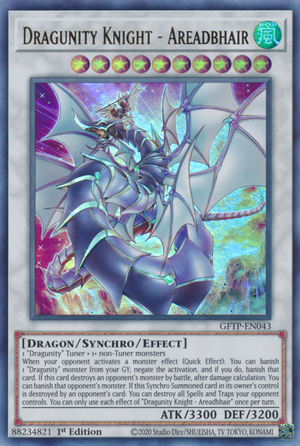

Cartas Polêmicas de Yu-Gi-Oh! e Yu-Gi-Oh! Duel Links!
Red Eyes Dark Dragoon

Card Text:
("Dark Magician" + "Red-Eyes Black Dragon" ou 1 Dragon Effect Monster):
Não pode ser destruído por efeitos de cartas. Nenhum jogador pode alvejar esta carta com efeitos de cartas.
Durante sua fase principal: Você pode destruir 1 monstro que seu oponente controla e, se o fizer, infligir dano ao seu oponente igual ao ATK original daquele monstro.
Você pode usar este efeito várias vezes por turno até o número de Monstros Normais usados como Material de Fusão para esta carta.
Uma vez por turno, quando uma carta ou efeito é ativado (efeito rápido):
Você pode descartar 1 carta; negue a ativação, e se você fizer isso, destrua aquela carta, e se você fizer isso, esta carta ganha 1000 ATK.
Blue Eyes Alternative Ultimate Dragon

Card Text:
("Dragão Branco de Olhos Azuis" + "Dragão Branco de Olhos Azuis" + "Dragão Branco de Olhos Azuis"):
Seu oponente não pode escolher este card como alvo de nem destruir este card com efeitos de card.
Uma vez por turno: você pode escolher 1 card que seu oponente controla; destrua-o.
Se este card foi Invocado por Invocação-Fusão usando como matéria um monstro cujo nome original seja
"Dragão Branco Alternativo de Olhos Azuis", em vez disso, você pode escolher até 3 cards que seu oponente controla.
Este card não pode atacar no turno em que este efeito for ativado
Shiranui Sunsaga

Card Text:
(1 Regulador Zumbi + 1 ou + monstros Zumbi Não-Reguladores):
Se este card for Invocado por Invocação-Especial:
você pode devolver para o Deck Adicional qualquer número dos seus Monstros
Sincro Zumbi que estiverem banidos ou no seu Cemitério e, depois,
você pode destruir cards que seu oponente controla, igual ao número de cards devolvidos.
Se um ou mais monstros Zumbi que você controla seriam destruídos em batalha ou por um efeito de card, em vez disso,
você pode banir 1 monstro "Shiranui" do seu Cemitério.
Você só pode Invocar um ou mais "Shiranui Solsaga" por Invocação-Especial uma vez por turno.
Dragunity Knight: Gomfaobhar

Card Text:
(1 regulador " Dragunity " + 1 + monstros não-reguladores:)
Quando esta carta é Synchro Summoned:
Você pode alvejar 1 regulador "Dragunity" em seu cemitário; equipe-o a esta carta.
(Efeito rápido): Você pode enviar 1 carta de equipamento que você controla
e que está equipada a esta carta para o cemitério, e então bana até 2 cartas no GY de seu oponente;
Você só pode usar cada efeito de "Dragunity Knight - Gormfaobhar" uma vez por turno .
Dragunity Knight: Aredbaheair
Card Text:
(1 regulador " Dragunity " + 1 + monstros não-reguladores:)
Quando seu oponente ativa um efeito de monstro ( Quick Effect ):
Você pode banir 1 monstro "Dragunity" do seu GY; negue a ativação e, se o fizer, bana aquela carta.
Se esta carta destruir o monstro de um oponente por batalha, após o cálculo do dano:
Você pode banir o monstro daquele oponente. Se este Summoned Synchro cartão no controle do seu proprietário original
é destruído por uma carta de um oponente: Você pode destruir todos as magias e armadilhas que
o seu oponente controla. Você só pode usar cada efeito de "Dragunity Knight - Areadbhair" uma vez por turno ..
Esses tipos de cartas são fortes demais para o "metagame" do jogo, e de fato, é algo dificil de lidar já que existem mais de 10.000 cartas dentro do jogo atualmente Aqui você pode saber mais sobre as cartas e todos os arquétipos relacionados ao jogo de cartas!!!
Saiba mais